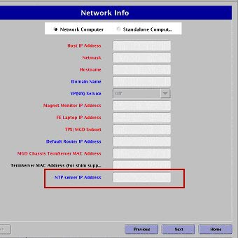
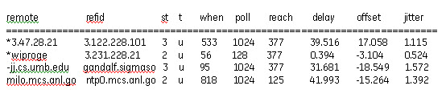

Operating Documentation
Direction 5670006, Rev# 1
Discovery MR750w GEM Service Methods
Module Version 2.0, Version Date 7/6/11
Operating Documentation |
| Required Persons | Preliminary Reqs | Procedure | Finalization |
|---|---|---|---|
| 1 | 30 mins |
| Condition | Reference | Effectivity |
|---|---|---|
The procedure in this document requires that the site has a Network Time Protocol (NTP) based time server. During the procedure, you will need to enter the IP address of the NTP server. Before you begin, obtain this address from the site's network administrator or IT department personnel. | - | - |
The Network Time Protocol (NTP) is a protocol for synchronizing the clocks of computer systems over packet-switched, variable-latency data networks. In order to use the NTP for synchronizing the system clock, a system within the hospital enterprise must be configured to provide the NTP service. This system will then provide time clock updates to systems configured to use the NTP time synchronization capability. Not all enterprises support this capability. In order to configure the MR scanner to use the NTP capability to keep its clock synchronized with the other systems within the hospital, you will need the IP address of the NTP server.
| ||||
| Verify that the MR system is not scanning before starting this procedure. | ||||
Start the Common Service Desktop (CSD) browser.
Select [Configure] tab.
Select Guided Install, [FE mode].
Click [start this tool]. You will be prompted to enter a password.
Enter the default password: operator.
Select the [Network Info] tab on Guided Install user interface
Enter the NTP server’s IP address in the NTP server IP Address field. See illustration below.
Illustration 1: Network Info Window

Click [Configure] and exit from the Guided Install. The time on the scanner host will change to reflect the same time as the time server in Universal time.
Reboot the system.
To verify that the NTP client is properly synchronized, follow these steps from the host computer:
Open a command window.
Enter: ntpq -p.
The output displays a list of time servers and the delay, offset and jitter that each server is experiencing. The delay and offset values of the NTP server you just synchronized should be non-zero and the jitter value should be under 100.
The illustration below is an example showing correct synchronization.
Illustration 2: Output With Correct Synchronization Values

Once configured, NTP will synchronize the time between the server and the client in Universal Time initially, after system startup and at a default time intervals.
| NOTE: | If the Host Computer drifts more than 1,000 seconds (approx 17 minutes) from the NTP server, the NTP service on the Host Computer will no longer synchronize automatically. The system will have to be restarted manually, or rebooted. |
Under circumstances, where the system cannot be rebooted, you can force synchronization manually. Verify that the system is idle and that no scans will start for the next 15 minutes. Verify that you have network connectivity to the NTP time server and the time server's IP address. To synchronize the system without rebooting, follow these steps:
Log onto the system as root user and from a command window.
Enter the following command: /usr/sbin/intpd -q -g.
| NOTE: | If Guided Install "saveinfo" was not done after configuring the NTP server's IP address, and if this information was not restored, then do a Load from Cold and repeat the Configuration of the NTP Server. |
No finalization steps.